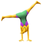

True or false: Who is Nathalie Jonsson?
True or false: Who is Nathalie Jonsson? Try to guess which of the follwing facts about me are true or false.
 I grew up right here in London
I grew up right here in London
 You guessed: True
You guessed: True
Good guess, but you’re wrong.
I was born and raised in Stockholm, Sweden. However, at this point I have spent 8 years London, which could be considered a short lifetime.
 You guessed: False
You guessed: False
You're right! 
I was born and raised in Stockholm, Sweden. Hence, I have excellent coping skills, such as surviving months with very short days and other months with very short nights.
I studied language in secondary school
You guessed: True
That’s correct!
Based on a random recommendation from my 6th-grade teacher, I chose to focus on foreign languages in secondary school. Being curious about living abroad, I ended up studying most of what was available: English, French, German and Spanish. Today, I use a lot my foreign language tricks when learning to program.
You guessed: False
Too bad. That’s wrong. 
I did study English, French, German and Spanish in secondary school. It was based in part on a random recommendation from my 6th-grade teacher and in part being curious about living abroad. Today I use my past language tricks to learn programming syntax.
I got a scholarship for a science degree after secondary school
You guessed: True
I wish! 
After focusing on language in secondary school, I did not qualify for a University science degree. So I spent a year in adult education catching up on all the required basic science. We had exams every week and at the end of the year we wre onl 8 people left.
You guessed: False
Yeah, you’re right.
Nothing about switching from a secondary school degree in foreign languages to a University degree in natural science was easy. I signed up for an intense year of catching up on the required basic science and weekly exams. I was one of 8 people who completed the course.
I have an MSc in Molecular Biology
You guessed: True
Yup, true 
I applied because I thought it sounded cool, but it turns out that I am really fascinated by what was covered (how DNA and cells work). It was also the perfect match for my lifelong passion for forensics and murder mysteries.
You guessed: False
No, I do have this degree. 
I thought it sounded really cool and applied for it, but it turned out that I was actually really into DNA and cells that we studied. I have also been into forensics and murder mysteries since a very young age. Lucky me!
I have a PhD in Molecular Biology
You guessed: True
Sorry you're wrong. 
This might be where most would expect the story to go (I know my mom did), but unlike most of my classmates, I never applied for a PhD position. The closest I ever got was 10 months of laboratory work to complete my MSc.
You guessed: False
Yes! You’re right! 
Unlike most of my classmates, I escaped the PhD. The closest to real research I ever got was when I spent 10 months in a laboratory to complete my MSc.
I moved to the UK because of an awesome job
You guessed: True
Nah, sorry. 
I moved to the UK to spend 10 months working in a laboratory and collect data to write my thesis so I could complete my MSc. I remained here because my boyfriend has enrolled in Art School in London.
You guessed: False
Spot on! 
I actually moved to the UK to do the 10 months of laboratory work I needed to write my thesis and complete my MSc. I stayed on because my boyfriend had enrolled in Art School in London. I have lived here since.
I am a professional writer
You guessed: True
You betcha! 
I've been a writer in the communications industry for 7 years. My favourite challenge is to make dull scientific data exciting to the relevant audience through storytelling.I love writing for digital platforms the most because you can experiment with user interaction and think about communication beyond just words.
You guessed: False
No, I really am a writer!
Over the past 7 years, I was a writer In the communications industry. I found my passion for storytelling and identifying key facts for specific audiences. I love writing for digital platforms because you get to think about user impact beyond the copy.
I will be a programmer
You guessed: True
Yes! Correct! 
I might be at the start of my journey and not be a fully fledged programmer yet, but I will be one day. Judging by my past I complete the projects I set for myself and I am not afraid of switching disciplines. I cannot wait to add "programmer" to my list of skills.
You guessed: False
How dare you doubt me! 
Although I guess you are right, I am not a programmer yet, but I will be one day. In my past, I have switched disciplines and managed to complete the challenges I have set for myself and I am excited to add "programmer" to my skills.
Thanks for clicking to the end of this website.
Hopefully you have learned a fact or two about me and consider me a potential candidate and a future programmer.
Let's make it happen!
Welcome!
This is the website I have built as part of my application to Founders & Coders.
I am an aspiring Web Developer with a background as a Writer in the communications industry.
Over the years my interest for digital platforms has grown because, unlike a printed booklet, digital media offers the possibility to create interactive experineces beyond just the words and copy.
I would like to explore this further in the future.